专题03 期末复习压轴题24个考点
【北师大版2024】

【选填压轴篇】 1
【考点1 化简绝对值求最值】 1
【考点2 数轴与绝对值的综合】 2
【考点3 幻方与程序框图】 3
【考点4 整式加减与周长问题】 4
【考点5 由一元一次方程的解求参数】 6
【考点6 线段（含数轴）中的动态问题】 6
【考点7 动角问题】 7
【考点8 与钟面角有关的角度计算】 8
【考点9 规律探究】 9
【考点10 多结论问题】 10
【解答压轴篇】 11
【考点11 含字母的绝对值的化简问题】 11
【考点12 有理数运算的规律探究】 12
【考点13 有理数运算的实际应用】 15
【考点14 整式加减中的不含某项问题】 18
【考点15 由整式加减解决整除问题】 19
【考点16 由整式加减解决几何图形问题】 20
【考点17 解特殊的一元一次方程】 22
【考点18 由一元一次方程的解求参数】 22
【考点19 一元一次方程的实际应用】 23
【考点20 与线段（数轴）有关的定值问题】 25
【考点21 与线段（数轴）有关的动点问题】 26
【考点22 角中的旋转问题】 28
【考点23 实际问题中的角度计算】 30
【考点24 与三角板有关的角度计算】 32

【选填压轴篇】
【考点1 化简绝对值求最值】
【例1】已知|x+1|+|x−2||y−2|+|y+1||z−3|+|z+1|=36，则2016x+2017y+2018z的最大值是 ．最小值是 ．
【变式1-1】（25-26七年级上·全国·月考）已知a−b=5，b−c=8，c−d=10，则a−d的最小值为（ ）
A．0 B．1 C．2 D．3
【变式1-2】若0<p<15，则代数式x−p+x−15+x−p+15在p≤x≤15的最小值是( )
A．30 B．0 C．15 D．一个与p有关的整式
【变式1-3】设实数a、b、c满足a<b<c（ac<0），且c<b<a，则x−a+x−b+x+c的最小值是（ ）．
A．a+b+c3 B．b C．c−a D．−c−a
【考点2 数轴与绝对值的综合】
【例2】（25-26七年级上·江苏无锡·月考）如图，数轴上点A、B表示的数分别是a、b，b−a=8；M为数轴上一点，其表示的数为m，当点M在数轴上移动时，若m−a+m−b 的值始终保持不变，则当m−a=3m−b时，m−b的值为（ ）

A．2 B．2.5 C．3 D．4
【变式2-1】如图A，B，C，D，E分别是数轴上五个连续整数所对应的点，其中有一点是原点，数a对应的点在B与C之间，数b对应的点在D与E之间，若|a|+|b|=3则原点可能是 ．

【变式2-2】如图，数轴上4个点表示的数分别为a、b、c、d．若|a﹣d|＝10，|a﹣b|＝6，|b﹣d|＝2|b﹣c|，则|c﹣d|＝（ ）

A．1 B．1.5 C．2.5 D．2
【变式2-3】如图，数轴上点A，B，C所对应的数分别为a，b，c且都不为0，BC=2AC．若2a+b=2a−3c−b−3c，则|2a+3b+3c|= （用含a，b的式子表示）．

【考点3 幻方与程序框图】
【例3】（24-25七年级上·江苏宿迁·期末）幻方是中国古代传统游戏，多见于官府、学堂．如图有一个类似于幻方的“如圆”，将−2，−4，−6，0，3，5，7，9分别填入图中的圈内，使横、竖，以及内、外圈上的4个数字之和都相等．现已完成了部分填数，则图中x+y的值是（ ）
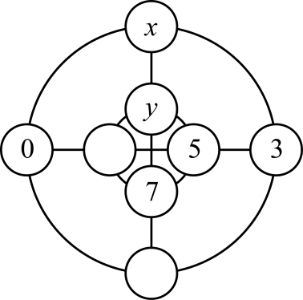
A．−6 B．5 C．−10 D．5或−10
【变式3-1】（24-25七年级上·重庆渝中·月考）在学习完有理数的混合运算后，小明和同学一起编制了如下一个运算程序：一开始输入一个非零自然数n，当n为偶数时，就用n除以2，得到一个新的自然数；当n为奇数时，我们先把n乘以3后，其结果再加上1，这样也能得到一个新的自然数．把第一次运算后得到的新的自然数再次代入程序中，按上述法则继续运算，并不断重复这个运算程序m次，直到运算的结果第一次为1时，终止此程序，我们就称m是自然数n的熵．例如自然数n=8时，则第一次运算8÷2=4，第二次运算4÷2=2，第三次运算2÷2=1，这样经过3次运算后结果第一次为1，则称8的熵m=3．若输入自然数n=3，则自然数3的熵m= ；若一个自然数n的熵m=10，则满足条件的所有可能的自然数n的取值之和为 ；

【变式3-2】“幻方”最早记载于春秋时期的《大戴礼记》中，如图1所示，每个三角形的三个顶点上的数字之和都与中间正方形四个顶点上的数字之和相等，现将−4，−2，−1，2，3，4，6，7填入如图2所示的“幻方”中，部分数据已填入，则(d−c+b)a的值为 ．
【变式3-3】如图是计算机程序的一个流程图，现定义：“x←x+2”表示用x+2的值作为x的值输入程序再次计算．比如：当输入x=2时，依次计算作为第一次“传输”，可得2×2=4，4−1=3，32=9，9不大于2024，所以2+2=4，把x=4输入程序，再次计算作为第二次“传输”，可得4×2=8，8−1=7，……，若输入x=1，那么经过（ ）次“传输”后可以输出结果，结束程序．

A．11 B．12 C．21 D．23
【考点4 整式加减与周长问题】
【例4】（24-25七年级上·甘肃临夏·期末）如图，在矩形ABCD中放入正方形AEFG，正方形MNRH，正方形CPQN，点E在AB上，点M、N在BC上，若AE=n，MN=m，CN=q，则图中右上角阴影部分的周长与左下角阴影部分的周长的差为（ ）
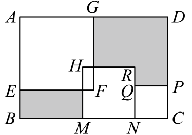
A．2n B．n+q C．m+n D．2m
【变式4-1】（25-26七年级上·广东汕头·期末）把如图1的两张大小相同的长方形卡片放置在图2与图3中的两个相同大长方形中，已知这两个大长方形的长比宽长10cm，若记图2中阴影部分的周长为C1，图3中阴影部分的周长为C2，那么C1−C2= cm．
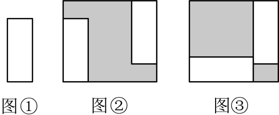
【变式4-2】（24-25七年级上·安徽亳州·月考）将图1中周长为32的长方形纸片剪成1号、2号、3号、4号正方形和5号长方形，并将它们按图2的方式放入周长为50的长方形中，则没有覆盖的阴影部分的周长为（ ）

A．18 B．32 C．42 D．48
【变式4-3】（25-26七年级上·浙江杭州·期末）将（1）和（2）两张正方形纸片按图示两种方式放置在同一个长方形中．图（1）中阴影部分的周长和为m，图（2）中阴影部分的周长和为n，且AM=ND．若AD=17，m−n=10，则正方形①的边长为 ．
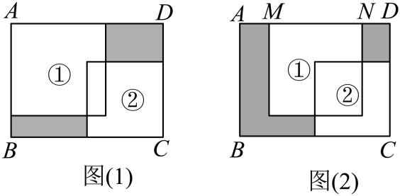
【考点5 由一元一次方程的解求参数】
【例5】（25-26七年级上·重庆·期末）已知k为整数，且关于x的方程kx+1=3x+6的解为正整数，则整数 k 的值为 ．
【变式5-1】已知关于x的一元一次方程x2023+a=2023x的解是x=2022，关于y的一元一次方程b2023+2023c=−a的解是y=−2021（其中b和c是含有y的代数式），则下列结论符合条件的是（ ）
A．b=−y−1,c=y+1 B．b=1−y,c=y−1
C．b=y+1,c=−y−1 D．b=y−1,c=1−y
【变式5-2】已知关于x的方程x−2−ax6=x3−2有非负整数解，则整数a的所有可能的取值的和为（ ）
A．−23 B．23 C．−34 D．34
【变式5-3】（24-25七年级下·重庆万州·月考）若不论k取什么数，关于x的方程2kx+m3−x−nk6=1（m、n是常数）的解总是x=1．则m+n的值是（ ）
A．−0.5 B．−1.5 C．0.5 D．15
【考点6 线段（含数轴）中的动态问题】
【例6】如图，已知数轴上的点C表示的数为6，点A表示的数为−4，点B是AC的中点，动点P从点A出发，以每秒2个单位长度的速度沿数轴向右匀速运动，运动时间为t秒t>0，另一动点Q，从B出发，以每秒1个单位长度的速度沿数轴向左匀速运动，且P，Q同时出发，当t为 秒时，点P与点Q之间的距离为2个单位长度．

【变式6-1】如图，已知A，B两点在数轴上，点A表示的数为−10，OB=2OA，点M以每秒1个单位长度的速度从点A向右运动，点N以每秒3个单位长度的速度从点B向左运动（点M、点N同时出发），经过几秒，点M、点N分别到原点O的距离相等（ ）

A．5秒 B．5秒或4秒 C．5秒或152秒 D．152秒
【变式6-2】如图1，点C在线段AB上，图中共有三条线段AB、AC和BC，若其中有一条线段的长度是另外一条线段长度的2倍，则称点C是线段AB的“好点”；如图2，已知AB=16cm．动点P从点A出发，以2cm/s的速度沿AB向点B匀速运动；点Q从点B出发，以1cms的速度沿BA向点A匀速运动，点P，Q同时出发，当其中点P到达终点时，运动停止；设运动的时间为t(s)，当t= s时，Q为线段AB的“好点”．

【变式6-3】（24-25七年级上·陕西西安·月考）如图，M是定长线段AB上一定点，点C在线段AM上，点D在线段BM上，点C、点D分别从点M、点B出发以1cm/s、2cm/s的速度沿直线BA向左运动，运动方向如箭头所示．若点C、D运动时，总有MD=2AC，N是直线AB上一点，且AN−BN=MN，则MNAB= ．
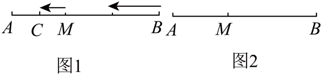
【考点7 动角问题】
【例7】（24-25七年级下·黑龙江大庆·期末）如图1，射线OC在∠AOB的内部，图中共有3个角：∠AOB，∠AOC和∠BOC，若其中有一个角的度数是另一个角度数的三倍，则称射线OC是∠AOB的“启仔等分线”．如图2，∠MPN=80∘，若射线PE绕点P从PN位置开始，以每秒8∘的速度顺时针旋转，当∠EPN首次等于180∘时停止旋转，设旋转的时间为t(秒)．当t= 时，射线PN是∠EPM的“启仔等分线”．

【变式7-1】如图，点O在直线AB上，过O作射线OC，∠BOC＝120°，一直角三角板的直角顶点与点O重合，边OM与OB重合，边ON在直线AB的下方．若三角板绕点O按每秒10°的速度沿逆时针方向旋转一周，在旋转的过程中，第t秒时，直线ON恰好平分锐角∠AOC，则t的值为（ ）

A．5 B．6 C．5或23 D．6或24
【变式7-2】（24-25七年级下·湖南永州·期末）如图1，O为直线AB上一点，作射线OC，使∠AOC:∠BOC=2:1，将一个直角三角尺如图摆放，直角顶点在点O处，一条直角边OP在射线OA上．将图1中的三角尺绕点O以每秒10°的速度按逆时针方向旋转（如图2所示），在旋转一周的过程中，第t秒时，OQ所在直线恰好平分∠AOC，则t的值为 ．

【变式7-3】（24-25七年级上·江苏无锡·期末）如图，∠AOB是平角，射线OM从OA开始，先顺时针绕点O向射线OB旋转，到达OB后再绕点O逆时针向射线OA旋转，速度为6度/秒．射线ON从OB开始，以4度/秒的速度绕点O向OA旋转，到当ON到达OA时，射线OM与ON都停止运动．当∠BON=2∠MON时，则t= ．
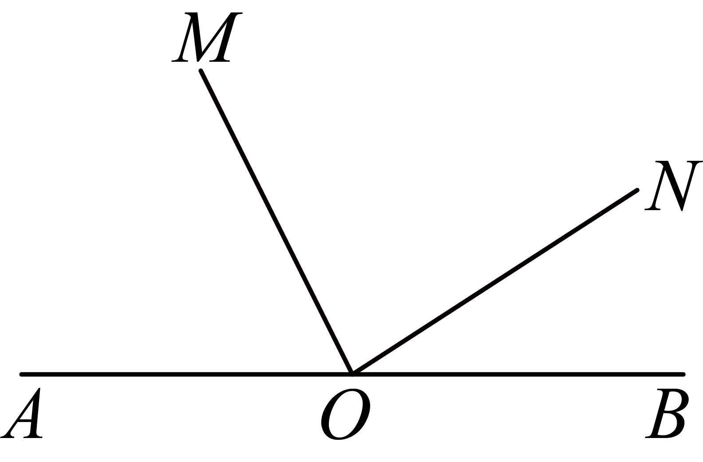
【考点8 与钟面角有关的角度计算】
【例8】我们知道在9点整时，时钟的分针与时针恰好互相垂直，那么从9点开始，到10点之前，经过 分钟后，时钟的时针与分针的夹角为105°．

【变式8-1】从时针与分针第一次成90°的角，到时针与分针第二次成90°的角，共经过（ ）分钟（结果四舍五入到整数）．
A．30 B．31 C．33 D．39
【变式8-2】（24-25七年级上·福建福州·期末）在日常生活中，时钟是我们常见的计时工具，其时针和分针按照固定的规律不停地转动着．如图是一个正常运行的时钟表盘，时针和分针有条不紊地围绕着表盘中心按各自的速度运转．现在是3点钟整，从这个时刻开始，当时针与分针第一次成90°角时，则所经过的时长（答案四舍五入到整数）是（ ）

A．30分钟 B．31分钟 C．32分钟 D．33分钟
【变式8-3】在2点到4点之间，时针和分针的夹角会有成90°的情形，请问这个时间点分别是 ．
【考点9 规律探究】
【例9】（25-26七年级上·陕西咸阳·期末）如图，数轴上O，A两点的距离为24，一动点P从点A出发，按以下规律跳动：第1次跳动到AO的中点A1处，第2次从A1点跳动到A1O的中点A2处，第3次从A2点跳动到A2O的中点A3处．按照这样的规律继续跳动到点A4,A5,A6⋅⋅⋅An（n≥3，n是整数）处，问经过这样2025次跳动后的点A2025与A1A2的中点的距离是（ ）
A．9−3×122022 B．9−3×122023
C．124−3×122023 D．12−3×122022
【变式9-1】（25-26九年级上·福建南平·期末）在“点燃我的梦想，数学皆有可能”数学创新设计活动中，小强设计了一个数学探究活动，他对依次排列的两个整式−m和−n按如下规律进行操作：第1次操作后得到3个整式−m，−n，−n+m；第2次操作后得到4个整式−m，−n，−n+m，m…其操作规则为：每次操作所增加的整式，都是用上一次操作得到的最后一个整式减去其前一整式的差，小强将这个活动命名为“回头差”游戏．则该“回头差”游戏的第2023次操作后得到的各整式之和是 ．
【变式9-2】（24-25七年级上·黑龙江哈尔滨·期末）用黑白两种颜色的正六边形地砖按如下所示的规律，拼成若干个图案，若第n个图形中白色地砖比黑色地砖多299块，则n的值为（ ）

A．100 B．99 C．98 D．60
【变式9-3】（24-25六年级下·山东东营·期末）如图，在综合实践课上，老师让同学们动手操作．在∠AOB内画1条射线，观察发现图中共有3个角：在∠AOB内画2条射线时，则图中共有6个角：在∠AOB内画3条射线时，则图中共有10个角：按照此规律，在∠AOB内画n条射线时，图中共有 个角．

【考点10 多结论问题】
【例10】（25-26七年级上·重庆·期末）有理数a，b，c，d在数轴上的对应点的位置如图所示．则在下列选项中，正确个数是（ ）

①若ac=0，则bd<0；
②若c=2，d=3，则d−c=1或d−c=5；
③若a+b+c=0且abc≠0，则b+c|a|+2a+c|b|+3a+b|c|=0
④若abcde为一个五位自然数，则|a−b|+|b−c|+|c−a|+|d−e|的最大值是17
A．1 B．2 C．3 D．4
【变式10-1】（25-26六年级上·山东淄博·期末）现定义一种“M运算”：对于若干个数，先将每两个数作差，再将这些差的绝对值进行求和．
例如：对−3，1，6这三个数进行“M运算”，得，−3−1+−3−6+1−6=4+9+5=18．
则，对−3，1，6这三个数进行“M运算”的结果为18．
若关于“M运算”有下列说法：
①对a，7这两个数进行“M运算”的结果是2，则a的值是9；
②对b，−8，10这三个数进行“M运算”的结果是36，则b的值最大为10，最小为−8；
③对c，−2，5，11这四个数进行“M运算”，则当c=5时，该运算的结果取得最小值为39．
则以上关于“M运算”的说法中，正确的是 ．（只填写所选择的序号）
【变式10-2】（25-26七年级上·河北衡水·期末）如图，OP是一条拉直的8cm长的细线，把这条细线沿某点向右折叠，然后在重叠部分的某处剪断得到三条细线，发现这三条细线的长度之比为1:1:2，求折痕处与点P的距离．甲、乙、丙三位同学讨论后，给出了如下结论：甲：折痕处与点P的距离是5cm；乙：折痕处与点P的距离是4cm；丙：折痕处与点P的距离是3cm．下列说法正确的是（）
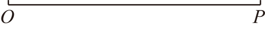
A．只有甲正确 B．甲、乙都正确
C．乙、丙都正确 D．甲、乙、丙都正确
【变式10-3】（24-25七年级上·吉林长春·月考）如图，点O在直线AB上，OC平分∠BOD，OE平分∠AOD．给出下面四个结论：①∠AOE与∠BOC互余：②∠BOE与∠EOD互补；③∠AOD+∠BOE=∠BOD+180°；④∠AOC−∠BOC=2∠EOD．上述结论中，正确结论的序号有 ．

【解答压轴篇】
【考点11 含字母的绝对值的化简问题】
【例11】（25-26七年级上·陕西西安·期末）有理数a，b，c在数轴上对应的点的位置如图所示，解答下列问题：

(1)化简：a−b−b+c+−a+c；
(2)求aa+bb+cc+abcabc的值．
【变式11-1】（25-26七年级上·湖南衡阳·期末）如图点A，B在数轴上分别表示有理数a，b，A，B两点之间的距离表示为AB，在数轴上A，B两点之间的距离AB=a−b．

回答下列问题：
(1)1与−3两点之间的距离是________，x和−3两点之间的距离是________．
(2)若x表示一个有理数，请你化简x−1+x+3，并结合数轴求x−1+x+3的最小值．（写解答过程）
(3)x−1−x+3的最大值是________．
(4)x−1+x−2+x−3的最小值是________．
(5)x−1+x−2+x−3+x−4的最小值是________．
(6)x−1+x−2+x−3+⋯⋯x−2025的最小值是________．
【变式11-2】（25-26七年级上·福建福州·期末）定义：将三个不等于0的有理数a，b，c两两相除（其中对于a，b可得ab，ba两种商），得到的商是m个互不相等的数（相等的商看作是一个数），称这m个数为这三个有理数的“互商组”，m为该“互商组”的基数．
例如，对于三个有理数1，2，3，得到“互商组”：12，2，13，3，23，32，其基数为6．
(1)求2，2，−6的“互商组”；
(2)请举例探究对于任意三个不等于0的有理数a，b，c的“互商组”的基数m的所有可能取值；
(3)已知三个不等于0的有理数a，b，c的“互商组”是d，e，f，它们在数轴上所表示的点分别是D，E，F（如下图）．若x−d+x−e+x−f的最小值为4，且a+b+c=5，求abc的值．

【变式11-3】（25-26七年级上·福建泉州·期末）对于非零的有理数a，当a>0时，a=a；当a<0时，a=−a．读以上材料，完成下列问题：
(1)若a=−2，求aa的值；
(2)若ab>0，求aa+bb的值；
(3)已知n个非零的有理数a1，a2，…，an−1，ann≥4，记x1=a1a1，x2=a2a2，…，xn=anan，若x1x2+x2x3+⋯+xn−1xn+xnx1=0，试说明：n一定能被4整除．
【考点12 有理数运算的规律探究】
【例12】（25-26七年级上·浙江嘉兴·期末）我校七年级数学兴趣小组成员们自主开展数学微项目研究．结合本阶段学习内容的特点，他们决定研究数的一些“神秘”性质．
探索数的神秘性质 | ||
素材 | 尼科马库斯是古希腊数学家，他的著作《算术入门》中记载了各种数分门别类的整理成果，其中任何一个整数m的立方都可以写成m个连续奇数之和． | 举例论证： 13=1；23=3+5；33=7+9+11； 请你按规律写出：43=______． |
规律总结 | 当m是奇数7时，则等号右边式子中的中间数（即第4个数）为______； | 当m为偶数10时，则等号右边式子中的中间两个数（即第5和第6个数）为______． |
综合应用 | 利用上面结论计算：13+23+33+⋯+93+103+113． | |
拓展延伸 | 我们还发现以下规律：已知m≥2，n≥2，且m，n均为正整数，如果将mn进行如图所示的“分解”； 若mn（且m，n均为不大于7的正整数）的分解中有奇数17，则mn的值为______． 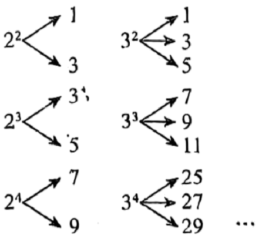 | |
【变式12-1】（25-26七年级上·四川泸州·期末）数学活动课上，李老师列举了以下等式：
第1个等式：11×2=1−12；
第2个等式：12×3=12−13；
第3个等式：13×4=13−14．
根据等式规律，解决下列问题：
(1)写出第4个等式为_______，第n个等式为______；
(2)利用等式规律计算：11×2+12×3+13×4+14×5+⋅⋅⋅+12022×2023．
(3)拓展计算：11×3+13×5+15×7+⋅⋅⋅+12023×2025．
(4)计算：14+112+124+140+160+184+1112+1144+1180．
【变式12-2】（24-25七年级上·浙江绍兴·期末）阅读下列材料：
第一个等式：1×2=131×2×3−0×1×2
第二个等式：2×3=132×3×4−1×2×3
第三个等式：3×4=133×4×5−2×3×4
第四个等式：4×5=……
以上前三个等式相加可得：
1×2+2×3+3×4=131×2×3−0×1×2+132×3×4−1×2×3+133×4×5−2×3×4
=131×2×3−0×1×2+2×3×4−1×2×3+3×4×5−2×3×4
=133×4×5−0×1×2=20
(1)根据规律写出第四个等式：4×5= ；
(2)根据规律写出第n个等式：n×n+1= ；
(3)根据规律计算：1×2+2×3+3×4+⋯+18×19+19×20
【变式12-3】（25-26七年级上·四川·期末）同学们利用正方形面积通过数形结合完成了12+122+123+⋯+126的求值，除了数形结合的方法以外，这类式子也有另一种代数求法，解法如下：
设S=12+122+123+⋯+126． ①
将①×12（注意：12是前面式子中后一个除以前一个数的值）
12S=122+123+⋯+126+127． ②
将①−②得S−12S=12+122+123+⋯+126−122+123+⋯+126+127，
所以 12S=12−127，S=1−126．
(1)完成下列计算：3×313=___________； 12×312−11×312=__________；（用幂表示结果）
(2)利用上述方法，求出3+32+33+34+…+312的值；
(3)【新情景】小聪同学用乐高积木块搭建了一个神奇的“知识塔”，塔的第1级用了 1×3块积木，第2级用了2×32块，第3级用了3×33 块，……，按照此规律，直到第12级用了 12×312块．已知每级塔的积木块数都符合 层级数×3层级数的规律，若 a=313，求出建造这座“知识塔”总共需要的积木块数（用含 a 的式子表示）．
【考点13 有理数运算的实际应用】
【例13】（25-26七年级上·湖北恩施·期末）某工厂根据安排原计划每天生产300个零件，但实际日产量与原计划相比有出入，下表是一周内的实际日产量．（增产记为正，减产记为负）
星期 | 一 | 二 | 三 | 四 | 五 | 六 | 日 |
产量/个 | +15 | −6 | −12 | −9 | −8 | +10 | +18 |
(1)日实际产量最多为__________个，最少为__________个；
(2)该厂实行计件工资制：若当天完成计划，计划内生产出的零件每个按10元发工资，超额完成的部分每个按15元发工资；若当天未完成计划，已完成的部分每个按10元的六折发工资，求该厂这一周发放的工资总额；
(3)若将题干中的“增产记为正，减产记为负”改为“比前一天产量增加记为正，比前一天产量减少记为负”，题干中表格的数据依次转化为下表数据．直接写出下表中“？”处的数据．
星期 | 一 | 二 | 三 | 四 | 五 | 六 | 日 |
产量/个 | … | −21 | … | … | … | ？ | … |
【变式13-1】（25-26七年级上·广东潮州·期末）数学活动：进位制的认识和探究
【阅读材料】如图，第十四届国际数学教育大会（简称ICME-14）于2021年在上海举办．会徽以中国文化中的“洛书”与“河图”为原本，展现了我国古代数学的文化魅力，其右下方的“卦”是用我国古代的计数符号写出的八进制数3745，记为37458．八进制数是以8作为进位基数的数字系统，有0~7共8个基本数字．八进制数3745换算成十进制数是3×83+7×82+4×81+5×80=2021．（规定当a≠0时，a0=1）．

【任务探究】在现实生活中，我们用得最多的是十进制记数法，满十进一．但在计算机领域中，用到的更多的是二进制记数法．一个二进制数的各数位上的数字为0和1，满二进一．在计算机中输入一个十进制数89，经过计算机处理将其转换成一个二进制数：
89=64+16+8+1=1×26+0×25+1×24+1×23+0×22+0×21+1×20=10110012．
（1）任务1：将十进制数45转换成二进制数是__________．将二进制数1010012转换成十进制数是__________．
（2）任务2：二进制数的数位有两个数字0和1，满二进一．二进制数的加法法则如下：
0+0=0，0+1=1，1+0=1，1+1=10（读作“壹零”，意思是结果为0，并向高位进1）．这四条规则是二进制所有计算的基础．
根据二进制数加法法则，计算100102+1112=__________．
【拓展应用】任务3：如图1，是小明的准考证号的二维码的简易编码（黑色代表1，白色代表0），每一行都代表一个二进制的数字，将每一行的二进制数字转换成十进制数，依次组合到一起就是小明的十进制的十位准考证号2412072813．
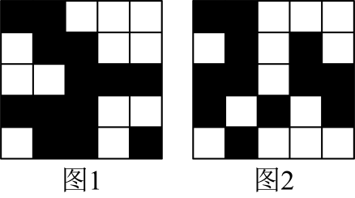
图2是小辉的准考证号的二维码的简易编码，请通过计算求出小辉的十进制的十位准考证号．
【变式13-2】（25-26七年级上·福建福州·期末）根据以下素材，探索完成任务．
素材1 | 福州市地铁实行里程分段计价票制，具体票价标准如下： 起步价：5公里（含5公里）以内为2元． 里程价：5~15公里（含15公里），每5公里加收1元（不足5公里按5公里计价）． 15~29公里（含29公里），每7公里加收1元（不足7公里按7公里计价）． 29公里以上，每9公里加收1元（不足9公里按9公里计价）． 备注： ①乘车途中若出站则需重新购票； ②两个地铁站之间里程为两站之间沿地铁的最短线路长度，且往返票价相同． 例如，若某两站之间有两种乘坐线路，长度分别为6公里和16公里，乘车途中没有出站，按票价标准的计费分别为3元和5元，则此两站之间的里程应为6公里，票价定为3元． |
素材2 | 福州市地铁通过多条线路形成高效便捷的交通环线，如图所示，从凤岗里站到城门站就有两条不同的线路形成一条环线．（图中各站点间距离均为近似值，帝封江站，城门站，南门兜站和金山站是不同线路的换乘站，整条环线共有26个站点，其余站点暂不标出） |
素材3 | 中学生持学生卡享5折优惠，其中空卡工本费为28元（卡内金额0元，需充值后使用）；通过“e福州”APP乘车码，可享9折优惠． |
问题解决 | |
任务1 | 小莉乘坐地铁从A站到B站，票价为3元，则A，B两站之间的最长里程是多少公里？ |
任务2 | 小莉从凤岗里站出发，沿路线1（乘坐5号线再换乘4号线）前往城门站游玩，游玩后再从城门站出发沿路线2（依次乘坐1号线，2号线，5号线）返回凤岗里站，小莉在往返两地的途中没有出站．请你根据素材2中的地铁线路长度，分别计算路线1和路线2按票价标准的计费，并通过大小比较思考小莉往返全程的实际地铁票价． |
任务3 | 若小莉沿路线1在凤岗里站和城门站之间往返，设其往返来回为一次里程，总里程数为a次，请你根据素材3的优惠方式分别用含a的代数式表示办学生卡出行和通过“e福州”出行的总花费，并思考当总里程数为8次时，哪种方式出行更合算． |
【变式13-3】（25-26七年级上·北京·期末）国庆期间，某超市各个区域都有促销活动，小明一家去逛该超市，准备购买纸巾，请你根据以下素材帮助小明探索在实际购买过程中哪种活动更优惠．
【素材1】超市的纸巾区域推出两种活动：
活动一：购物满100元减10元，满200元减30元，满300元减60元，⋯，上不封顶．
活动二：所有商品打8.5折．
【素材2】小明家用的两种纸巾信息如下：1袋清风牌纸巾共12包，超市标价40元/袋；1箱4D溶纸巾共12包，超市标价60元/箱．
【素材3】小明家平均3天用1包清风牌纸巾，平均5天用1包4D溶纸巾．
【解决问题】
按需要存半年（按180天计算）的量计算，

(1)小明家半年需要消耗清风牌纸巾_____袋，消耗4D溶纸巾_____箱；
(2)小明家清风牌纸巾还有1袋存货，4D溶纸巾存货不清楚．
①小明需要购买2种纸巾，其中需要购买4D溶纸巾x箱，在不参与促销活动的前提下，所需的总费用为_____元（用含x的代数式表示）；
②当x=1时，若小明选择活动一，则所需的总费用为_____元；
③若小明家4D溶纸巾没有存货，选择哪种活动更优惠？请说明理由．
【考点14 整式加减中的不含某项问题】
【例14】（25-26七年级上·福建厦门·期末）定义：若x−y=m，则称x是y关于m的相关数．
(1)若6是a关于2的相关数，则a=_______；
(2)若A是B关于m的相关数，A=2mn−3m+n+5，B的值与m无关，求B的值．
【变式14-1】（1）一天数学老师布置了一道数学题：已知x=2017，求整式x3−6x2−7x+8−−x2−3x+2x3−3+x3+5x2+4x−1的值，小明观察后提出：“已知x=2017是多余的”，你认为小明的说法有道理吗？请解释.
（2）已知整式M=x2+5ax−3x−1，整式M与整式N之差是3x2+4ax−x.
①求出整式N.
②若a是常数，且2M+N的值与x无关，求a的值.
【变式14-2】一个多项式的次数为m，项数为n，我们称这个多项式为m次多项式或者m次n项式，例如：5x3y2−2x2y+3xy为五次三项式，2x2−2y2+3xy+2x为二次四项式．
（1）−3xy+2x2y2−4x3y3+3为________次________项式．
（2）若关于x、y的多项式A=ax2−3xy+2x，B=bxy−4x2+2y，已知2A−3B中不含二次项，求a+b的值．
（3）已知关于x的二次多项式，ax3−x2+3x+b2x2+x+x3−5在x=2时，值是−17，求当x=−2时，该多项式的值．
【变式14-3】（24-25七年级上·河北秦皇岛·期末）定义新运算“△”和“□”：
①定义新运算“△”：给定有理数a、b，对于整式A、B，规定A△B=aA−bB，等式右边是通常的减法、乘法运算；
②定义新运算“□”：给定正整数n（n≥2），对于整式M，规定n□M=M△M△…△Mn个M（按从左到右的顺序依次做“△”运算）例如：当a=1、b=2，n=2时，对于A=x，B=y，则有A△B=A−2B=x−2y，2□A=A△A=x−2x=−x．
(1)当a=2，b=2时，若A=x+2y，B=2x−3y，求A△B和3□A．
(2)直接写出一组a，b的值，使得对任意一个正整数n（n≥2）和任意—个整式M，都有n□M=M成立．
(3)当a=1，b=2时，若A=4x2+3xy+5y2，B=10x2−7xy+6y2+8，若(p□A)△(q□B)（p、q为正整数，且p≥2、q≥2）中不含x2项，直接写出满足条件的一组p、q的值．
【考点15 由整式加减解决整除问题】
【例15】（25-26七年级上·山东德州·期末）若一个两位数的十位和个位上的数字分别为x和y，我们可将这个两位数记为xy．同理，一个三位数的百位、十位和个位上的数字分别为a，b和c．则这个三位数可记为abc．
(1)若x=3，则2x+x3=______________；若t=2，则t83−5t9=___________．
(2)ab+ba一定能被11整除，请说明这个结论的理由．
(3)任选一个三位数，要求个、十、百位的数字各不相同且不为零，把这个三位数的三个数字按大小重新排列，得出一个最大的数和一个最小的数，用得出的最大的数减去最小的数得到一个新数，再将这个新数按上述方式重新排列，再相减，像这样运算若干次后一定会得到同一个重复出现的数，这个数称为“卡普雷卡尔黑洞数”．则“卡普雷卡尔黑洞数”是______________．
【变式15-1】（25-26七年级上·重庆·期末）一个四位自然数M=abcd，其中千位数字是个位数字的两倍，百位数字与十位数字之和为10，则称这个四位数为“倍和数”，记FM=ab+cd，例如：四位数6193，因为6=2×3，1+9=10，所以6193是“倍和数”，F6193=61+93=154；四位数8154，∵8=2×4，1+5≠10，所以8154不是“倍和数”
(1)请判断6423，4552是否是“倍和数”，并说明理由；
(2)若N是“倍和数”，FN的两倍与N的各位数字之和能被11整除，请求出这个四位数．
【变式15-2】（25-26七年级上·福建福州·期末）对于任何一种进制——X进制，运算时是逢X进一，十进制是逢十进一、二进制是逢二进一，以此类推.X进制就是逢X进一.为与十进制进行区分，我们常把用X进制表示的数a写成(a)X．
X进制的数转化为十进制数的方法：
例如：(101)2=1×22+0×21+1×20=5，(1023)5=1×53+0×52+2×51+3×50=138．
根据材料，完成以下问题：
(1)把下列进制表示的数转化为十进制表示的数：(10101)2=______，(102)3=______；
(2)一个四进制三位数(a3b)4与一个五进制三位数(1ba)5之和能被6整除(a,b均为正整数)，求a的值；
(3)已知七进制数(mm4)7与六进制数(n2n)6之差为292，请判断能否找到符合条件的m和n．若能，求出m和n的值；若不能，请说明理由．
【变式15-3】（25-26七年级上·广东广州·期末）若一个三位数的百位，十位，个位上的数字分别a，b，c，则记这个三位数为n=abc，于是n=abc=100a+10b+c．若a+c−b=6，则称这个三位数为“好六数”．例如：n=413，因为4+3−1=6，所以413是“好六数”．
(1)判断：352___________“好六数”．（填“是”或“不是”）
(2)若n=110t+17（t为不超过8的正整数），则n是“好六数”．请说明理由．
(3)已知三位自然数m是“好六数”，且m=100a+10b−16（a，b为不超过9的自然数），p是m去掉其百位数字后的两位数，而q是m去掉其个位数字后的两位数，则p与q的和能被3整除吗？请写出结论，并说明理由．
【考点16 由整式加减解决几何图形问题】
【例16】（25-26七年级上·四川成都·期末）现有6个完全相同的长和宽分别为n，mn>m的小长方形纸片（如图1）和两个阴影部分的长方形纸片按图2的方式拼成了一个宽为h的大长方形．
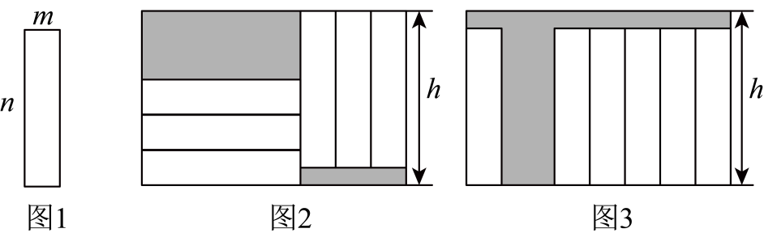
(1)当n=9，m=2，h=10时，则图2的大长方形的面积为_____．
(2)①请用含m，n的代数式表示图2中拼成的大长方形的长为_____．
②请用含h的代数式表示图2中两个阴影部分的长方形纸片的周长之和；
(3)现小实同学把这6个完全相同的小长方形纸片（如图1）和一个“T”形阴影纸片按图3的方式拼成了和图2完全一样的宽为h的大长方形．若图2和图3拼成的大长方形的长比宽h都大5，设图2中两个阴影部分的长方形纸片的周长之和为C1，图3中“T”形阴影纸片的周长之和为C2，求C2−C1的值．
【变式16-1】（25-26七年级上·广东中山·期末）为了更好地理解整式加减的实际应用，七（1）班龙狮小组进行数学实践活动．
【操作探究】如图，将三个边长a，b，c(a>b>c)的正方形分别放入长方形ABCD和长方形EFGH中，记阴影部分①、②、③、④的周长分别为C1，C2，C3，C4，

（1）若a=4，b=3，c=1，求长方形ABCD的面积；
【深入思考】
（2）若长方形ABCD的周长为24，长方形EFGH的周长为16，请算出C1，C2，C3的值；
【拓展提升】
（3）若C1+C2=m，C2−C3=n，求长方形EFGH的周长（结果用含m，n的代数式表示）．
【变式16-2】将图①中的长方形纸片剪成1号，2号，3号，4号正方形和5号长方形．
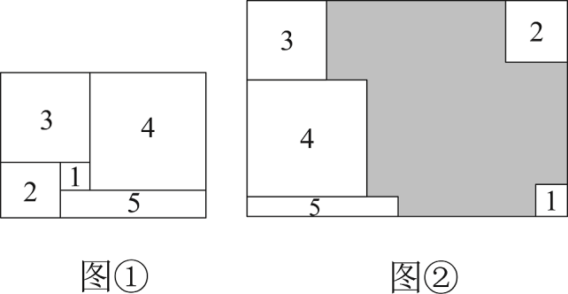
(1)设3号正方形的边长为x，4号正方形的边长为y，求1号，2号正方形的边长分别是多少？（用x，y的代数式表示）
(2)若图①中长方形的周长为48，试求3号正方形的边长；
(3)在（2）的情况下，若将这五个图形按图②的方式放入周长为100的长方形中，求阴影部分的周长．
【变式16-3】小明家住房户型呈长方形，平面图如下（单位：米）．现准备铺设整个长方形地面，其中三间卧室铺设木地板，其它区域铺设地砖．（房间内隔墙宽度忽略不计）
（1）求a的值；
（2）请用含x的代数式分别表示铺设地面需要木地板和地砖各多少平方米；
（3）按市场价格，木地板单价为300元/平方米，地砖单价为100元/平方米．装修公司有A，B两种活动方案，如表：
活动方案 | 木地板价格 | 地砖价格 | 总安装费 |
A | 8折 | 8.5折 | 2000元 |
B | 9折 | 8.5折 | 免收 |
已知卧室2的面积为21平方米，则小方家应选择哪种活动，使铺设地面总费用（含材料费及安装费）更低？
【考点17 解特殊的一元一次方程】
【例17】（24-25八年级下·辽宁铁岭·月考）解方程：2006−x2005+2008−x2007=2010−x2009+2012−x2011
【变式17-1】（24-25六年级上·上海·期末）解方程1+35x−13−16−110−115−121−128−136−145−155=1211
【变式17-2】（2025六年级上·全国·专题练习）解方程：|2x−1|+|x−2|=|x+1|．
【变式17-3】解方程：
(1)0.3x+0.80.5−0.02x+0.30.3−1=0.8x−0.43
(2)x1×2+x2×3+⋯+x2023×2024=2023
【考点18 由一元一次方程的解求参数】
【例18】（25-26七年级上·山东日照·月考）定义：关于x的方程ax−b=0与方程bx−a=0（a，b均为不等于0的常数）称为互为“反对方程”，例如：方程2x−1=0与方程x−2=0互为“反对方程”．
(1)若关于x的方程6x−3=0与方程3x−c=0互为“反对方程”，则c=_______．
(2)若关于x的方程5x+3m+1=0与方程8x−n+2=0互为“反对方程”，求mn的值．
(3)若关于x的方程5x−c=0与其“反对方程”的解都是整数，求整数c的值．
【变式18-1】（25-26七年级上·山东济宁·月考）已知关于x的一元一次方程mx6−3=x−83（其中m为常数），
(1)佳佳同学在解这个方程时，去分母时忘记给左边的−3乘以6，最终解的x=1，求这个方程正确的解．
(2)若该方程的解为整数，且m为整数，求m的值．
【变式18-2】（25-26七年级上·湖南湘西·月考）已知一个关于x的一元一次方程cx+d=0（c≠0，d为常数），若这个方程的解恰好为x=c+d或x=−c−d，则称这个方程为“幸福方程”．例如：−2x+4=0的解为x=2，而−2+4=2，则方程−2x+4=0是“幸福方程”．
(1)下列方程是“幸福方程”的打“√”，不是“幸福方程”的打“×”；
①x−7=0（ ） ②−3x+1=−72（ ）
(2)若关于x的方程2x+m=0是“幸福方程”，求m的值；
(3)若关于x的方程ax−b=0是“幸福方程”，求关于y的方程ab−ay+5=−b+1y的解．
【变式18-3】（24-25七年级上·湖南长沙·月考）定义：若关于x的一个方程为x=a（a为常数），关于y的一个方程的解为y=b（b为常数），且a，b满足a−b=m（m为正数），则称这两个方程是“m差解友好方程”，
例如：方程2x+1=5的解是x=2，方程y−1=0的解是y=1，因为2−1=1，所以方程2x+1=5与方程y−1=0是“1差解友好方程”．
(1)请通过计算判断关于x的方程3x−2=4与关于y的方程2y=3y+2是不是“4差解友好方程”；
(2)如果关于x的方程x−x+3k2=2k−1与关于y的方程y−3y−1=2（k为常数）是“1差解友好方程”，求k的值；
(3)关于x，y的两个方程3x+1=2t−1与方程2y−tn=n（t，n为常数），若对于任何有理数t，都使得它们是“2差解友好方程”，求n的值．
【考点19 一元一次方程的实际应用】
【例19】（24-25七年级下·全国·假期作业）A、B两市相距176千米，两市之间一处因山体滑坡导致连接这两市的公路受阻，甲、乙两个工程队接到指令，要求于早上7点，分别从A、B两地同时出发赶往滑坡地点疏通公路．甲队于9点赶到并立即开工半小时后，乙队也赶到，并立即投入抢修工作，此时甲队已完成了全部任务的124．
(1)如果滑坡受损公路长1千米，甲队行进的速度是乙队的32倍多5千米，求甲、乙两队的行进的速度各是多少？
(2)如果下午3点两队就完成公路疏通任务，胜利会师，那么若由乙队单独疏通这段公路时，需要多少时间才能完成任务？
【变式19-1】（25-26七年级上·江西南昌·月考）某书店为促销经典名著，按购买数量分三部分制定阶梯售价，如下表：
购买数量 | 单价 |
不超过200本的部分 | 12元/本 |
超过200本但不超过500本的部分 | 9元/本 |
超过500本的部分 | 6元/本 |
(1)若购买350本这种经典名著，需花费___________元；若购买650本这种经典名著，需花费___________元；
(2)某学校为丰富图书馆藏书，花了2517元从该书店购买这种经典名著，则该校购买了多少本经典名著？
(3)该校教务处先为初一学生购买一批经典名著作为课外读物，后来又为初二学生追加购买了一批，两次共购买了900本，其中第一次购买的数量超过450本，且小于700本，两次共花费9150元，求第一次购买的数量．
【变式19-2】（24-25七年级下·新疆克拉玛依·期末）克拉玛依市准噶尔商场经销的A，B两种商品，A种商品每件售价60元，利润为20元；B种商品每件进价50元，售价80元．（利润=售价-进价，利润率=利润进价×100%）
打折前一次性购物总金额 | 优惠措施 |
少于等于450元 | 不优惠 |
超过450元，但不超过600元 | 按总售价打九折 |
超过600元 | 其中600元部分八折优惠，超过600元的部分打七折优惠 |
(1)A种商品每件进价为___________元，每件B种商品利润率为___________；
(2)若准噶尔商场同时购进A，B两种商品共50件，恰好总进价为2100元，求购进A种商品多少件？
(3)在“元旦”期间，准噶尔商场对A，B两种商品进行如下的优惠促销活动：按上述优惠条件，若小华一次性购买A，B商品实际付款522元，求小华在该商场打折前一次性购物总金额？
【变式19-3】（25-26七年级上·福建泉州·期末）如图，甲、乙两台搬运机器人分别固定在数轴型仓库的8号货架（甲初始位置）和13号货架（乙初始位置），货架编号沿数轴正方向递增，机器人仅沿数轴正/负方向移动，每次移动以“货架间距”为单位（1个单位对应1个货架间距）．系统每次下达1条运输指令，指令类型分为三类，各类指令对应的机器人移动规则唯一且固定：

①协同搬运指令：甲向正方向移动2个单位，乙向负方向移动2个单位；
②甲优先搬运指令：甲向正方向移动2个单位，乙向正方向移动1个单位；
③乙优先搬运指令：甲向负方向移动2个单位，乙向负方向移动1个单位．
(1)从初始位置出发，仅执行1条“协同搬运指令”后，甲、乙两台机器人之间的货架间距为 个单位长度；
(2)从初始位置出发，累计执行k条运输指令
①若k=8，且两台机器人只执行“优先搬运指令”，设“甲优先搬运指令”执行次数为n，甲最终停留的货架编号为 （用n的代数式表示）；
②若“协同搬运指令”次数与“优先搬运类指令”总次数的比为1:1，设“甲优先搬运指令”执行次数为n，最终停留的货架编号为 （用k、n的代数式表示）；若此时甲、乙的位置间距为3个货架单位，求所有符合条件的k值及对应的各类指令执行次数．
【考点20 与线段（数轴）有关的定值问题】
【例20】（25-26七年级上·四川成都·期末）如图，已知点A、B、C是数轴上三点，O为原点．点C对应的数为6，BC=4，AB=12．
动点P、Q分别同时从A、C出发，分别以每秒6个单位和4个单位的速度沿数轴正方向运动．M为AP的中点，N为CQ的中点，设运动时间为tt>0．

(1)求点A、点B对应的数；
(2)t为何值时，OM=2BN；
(3)当点P在点C的左侧时，是否存在常数m使得mPQ−MN为定值，若存在，请求出m的值，若不存在，请说明理由．
【变式20-1】（24-25七年级上·湖北武汉·期末）如图，点A，B，C，D是同一直线上从左到右依次排列的四点，AB=a，CD=b，且a，b满足：a−6+b−32=0，BC=15．

(1)a= ，b= ；
(2)线段AB以2个单位长度/秒的速度向右匀速运动，同时线段CD以1个单位长度/秒的速度向左匀速运动．
①求运动多少秒时，线段AB，CD重合的长度为2；
②当点B和C重合时，线段CD立即以原来2.5倍的速度向右运动，线段AB的运动状态不变，若线段CD向右运动过程中，式子2AC+mBD的值为定值n，请求m和n的值．
【变式20-2】（24-25七年级上·湖北武汉·期末）如图，已知C，D是线段AB上两点；E，F两点分别是线段AC，BD上的点，且AE=1nAC，BF=1nBD；M，N两点分别是线段AD，BC上的点，且AM=1nAD，BN=1nBC．

(1)如图1，已知AB=12，CD=9，若n=2，请直接写出线段EF的长度：________；
(2)如图2，在（1）的条件下，若n=3，求线段EF和MN的长度．
(3)如图3，若n=4，下列两个结论，①EF+MNAB是定值，②EF−MNAB是定值，其中只有一个是正确的，请直接写出正确结论的序号：_______，并直接写出其定值：_______．

【变式20-3】如图，已知直线l上有两条可以左右移动的线段：AB=m,CD=n，且m，n满足m−4+n−82=0，点M，N分别为AB,CD中点．

(1)求线段AB,CD的长；
(2)线段AB以每秒4个单位长度向右运动，线段CD以每秒1个单位长度也向右运动．若运动6秒后，MN=4，求此时线段BC的长；
(3)若BC=24，将线段CD固定不动，线段AB以每秒4个单位速度向右运动，在线段AB向右运动的某一个时间段t内，始终有MN+AD为定值．求出这个定值，并直接写出t在哪一个时间段内．
【考点21 与线段（数轴）有关的动点问题】
【例21】（25-26七年级上·吉林长春·期末）如图，点C在线段AB上，AC=2cm，AB=6cm．点P以1cm/s的速度从点A沿线段AB向点B运动；同时点Q以2cm/s的速度从点B沿线段BA向点A运动，到达A点立即原速返回点B，当点P运动到点B时，点P、Q都停止运动．设点P运动的时间为t(s)．

(1)当t=1时，求PQ的长；
(2)用含t的代数式表示AQ的长；
(3)当点C为PQ中点时，求t的值；
(4)若点D是线段AQ的中点，在整个运动过程中，是否存在某个时间段，使DP的长度保持不变？如果存在，求出DP的长度并写出其对应的时间段；如果不存在，请说明理由．
【变式21-1】（25-26七年级上·山东济南·期末）数轴是初中数学的一个重要工具，利用数轴可以将数与形完美地结合．研究数轴我们发现了许多重要的规律：若数轴上点A，点B表示的数分别为a，b，则A，B两点之间的距离AB=a−b（当a>b时，AB=a−b；当a<b时，AB=b−a），线段AB的中点表示的数12a+b．
如图，数轴上点A，点B，点C表示的数分别为−6，2，3，点P，Q，R分别从A，B，C出发沿数轴的正方向移动，其中点P的速度为每秒4个单位长度，点Q的速度为每秒2个单位长度，点R的速度为每秒m个单位长度，线段PQ的中点为D，运动时间为t．

(1)当t=2时，PQ=______；
(2)试用含t的代数式表示点D表示的数；
(3)若在运动过程中，点R始终在点D的右边，且R，D两点间的距离保持不变，试求m的值和RD的长度；
(4)当OP=4OD时，直接写出t的值．
【变式21-2】（24-25七年级上·湖北武汉·期末）如图，线段AB=16，点A在点B的左边．

(1)点C在直线AB上，AC=3BC，则AC= ．
(2)点D在线段AB上，AD=4．点P从点D出发，以每秒4个单位长度的速度沿直线AB向右运动，设运动时间为t秒．
①点M是线段AP的中点，点N是线段DP的中点．当t为何值时，BP=MN？
②若点P从点D出发时，以每秒4个单位长度的速度沿直线AB向右运动，点Q从点B同时出发，以每秒1个单位长度的速度沿直线AB向右运动．点P与点Q相遇后，点P保持原来运动方向不变，速度变为2个单位长度/秒，点Q改变原来的运动方向沿直线AB向左运动，且速度变为3个单位长度/秒．在整个运动过程中，当2PQ−BP=DP时，t= ．
【变式21-3】（24-25七年级上·云南曲靖·期末）如图，∠AOB的边OA上有一动点P，从距离O点24cm的点M处出发，沿线段MO，射线OB运动，点P在线段MO上速度为4cm/s．在射线OB上速度为5cm/s；动点Q从点O出发，沿射线OB运动，速度为2cm/s，点P、Q同时出发，设运动时间是ts．
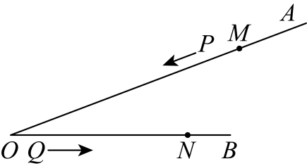
(1)当点P在MO上运动时，t为何值，能使OP=OQ？
(2)若点Q运动到距离O点18cm的点N处停止，在点Q停止运动前，点P能否追上点Q？如果能，求出t的值；如果不能，请说出理由；
(3)若P、Q两点不停止运动，t为何值时，它们相距14cm？（若点P在线段MO上，点Q在射线OB上，则P、Q两点的距离为：点P到点O的距离与点Q到点O的距离之和）
【考点22 角中的旋转问题】
【例22】点O是直线AB上的一点，射线OC从OA出发绕点O顺时针方向旋转，旋转到OB停止，设∠AOC=α0°≤α≤180°，射线OD⊥OC，作射线OE平分∠BOD．

(1)如图1，若α=40°，且OD在直线AB的上方，求∠DOE的度数．
(2)射线OC顺时针旋转一定的角度得到图2，当射线OD在直线AB的下方时，其他条件不变，请你用含α的代数式表示∠DOE的度数．
(3)射线OC从OA出发绕点O顺时针方向旋转到OB，在旋转过程中你发现∠DOE与∠AOC（0°≤∠AOC≤180°，0°≤∠DOB≤180°）之间有怎样的数量关系？请你直接用含α的代数式表示∠DOE的度数．
【变式22-1】已知：∠AOD=150°，OB，OE，OF是从点O引出的三条射线．
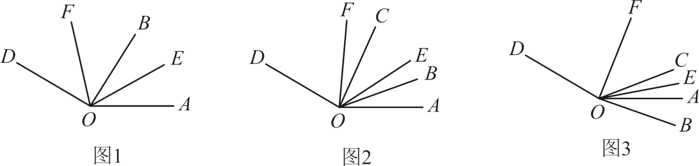
(1)如图1，若OE平分∠AOB，OF平分∠BOD，当∠AOB=60°时，∠EOF= ；当射线OB绕点O在∠AOD内部旋转时，∠EOF= ．
(2)如图2，若∠BOC=30°，OE平分∠AOC，OF平分∠BOD，当∠BOC绕点O在∠AOD内旋转时，试说明：∠AOE与∠DOF互余．
(3)如图3，当射线OB在∠AOD外，若∠BOC=30°，OE平分∠AOC，OF平分∠BOD．
①当∠AOB小于30°时，猜想∠AOE与∠DOF的关系，并说明理由．
②当∠AOB大于30°而小于180°时，直接写出∠EOF的度数．
【变式22-2】（24-25七年级上·湖北武汉·期末）如图1，将两块直角三角板（一块含有30°、60°角，另一块含45°角）摆放在直线MN上，三角板ODC绕点O以每秒15°的速度逆时针旋转．当OD第一次与射线OM重合时三角板ODC停止转动，设旋转时间为t秒．

(1)当t=2秒时，∠BOC=___________°，∠AOD=___________°，∠AOC=___________°；
(2)如图2，若两块三角板同时旋转，三角板OAB以每秒20°的速度绕点O顺时针旋转，当OA第一次与射线ON重合时三角板OAB立即停止转动．
①射线OA和射线OD重合前，当∠AOD=32∠BOC时，求出相应的t的值；
②整个旋转过程中，当满足∠AOD−∠BOC=5°时，直接写出相应的t的值___________．
【变式22-3】已知∠AOB=120°，OC、OD是∠AOB内部的两条射线．
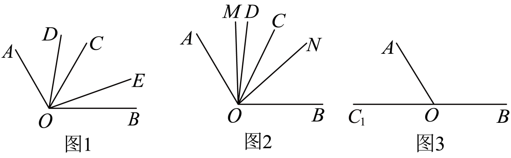
(1)如图1，若∠DOC=20°，OC平分∠AOB，OE为∠BOC内部的一条射线，∠BOE=13∠BOC，求∠DOE的度数；
(2)如图2，若OM、ON分别平分∠AOC、∠BOD，且∠MOC:∠DON=2:3，若∠DOC=20°，求∠DOM和∠CON的度数；
(3)如图3，C1为射线OB的反向延长线上一点，将射线OB绕点O以6°/s的速度顺时针旋转，旋转后OB对应的射线为OB1，旋转时间为t s0<t≤40，OE平分∠AOB1，∠C1OF=13∠C1OB1，若∠C1OF−∠AOE=30°，直接写出t的值．（注：本题涉及的角均小于180°）
【考点23 实际问题中的角度计算】
【例23】如图1，大课间的广播操展让我们充分体会到了一种整体的图形之美，欢欢和乐乐想从数学角度分析下如何能让班级同学们的广播操做得更好，他们搜集了标准广播操图片进行讨论，如图2，为了方便研究，定义两手手心位置分别为A，B两点，两脚脚跟位置分别为C，D两点，定义A，B，C，D平面内O为定点，将手脚运动看作绕点O进行旋转：

(1)填空：如图2，A，O，B三点共线，且∠AOC=∠BOC，则∠AOC=______°
(2)第三节腿部运动中，如图3，欢欢发现，虽然A，O，B三点共线，却不在水平方向上，且∠AOD:∠BOC=6:5．她经过计算发现，∠AOC−20°∠BOD+12°的值为定值，请判断欢欢的发现是否正确，如果正确请求出这个定值，如果不正确，请说明理由；
(3)第四节体侧运动中，乐乐发现，两腿左右等距张开且∠COD=30°，开始运动前A、O、B三点在同一水平线上，OA、OB绕点O顺时针旋转，OA旋转速度为50°/s，OB旋转速度为25°/s，当OB旋转到与OD重合时，运动停止，如图4
①运动停止时，直接写出∠AOD=______；
②请帮助乐乐求解运动过程中∠AOC与∠BOE的数量关系．
【变式23-1】（25-26七年级上·全国·课后作业）在市场上称货物用的台秤的量程（称量的最大范围）一般是16kg，指示盘上的刻度是均匀的，把12kg蔬菜放在秤上，指示盘上的指针转了270°．
(1)把4kg的蔬菜放在秤上，指针转了多少度？
(2)若指针转了180°，这些蔬菜有多少千克？
【变式23-2】游乐园的摩天轮深受学生们的喜爱，如图1是某游乐园的摩天轮的结构图，16个座舱均匀分布在圆形转轮边缘，摩天轮以固定的速度绕中心逆时针方向转动，转一周需要30分钟．如图2是摩天轮的主视图，座舱与圆形转轮边缘的连接点按顺时针依次标注为Mi(i=1、2⋯⋯16),△AOB表示的是摩天轮的支架，且∠AOB=60°．

(1)摩天轮每分钟转动____________°，∠M1OM3=____________°；
(2)如图2，在某一时刻，连接点M1转动到∠AOB的内部，此时∠AOM1=18°．
①求此时的∠BOM3的度数；
②求当OM3第一次平分∠AOB时，摩天轮的转动时间以及此时∠AOM1的度数；
③设摩天轮转动的时间为t，在连接点M1到达到最高处前，是否存在∠BOM3=2∠AOM1的时刻？若存在，求出t的值，若不存在，请说明理由．
【变式23-3】（24-25七年级上·广东湛江·期末）大课间的广播操展示让我们充分体会到了一种整体的图形之美．洋洋和乐乐想从数学角度分析下如何让班级同学们的广播操能做的更好，他们搜集了标准广播操图片进行讨论，如图1，为了研究方便，两手手心位置分别记为A，B两点，两脚脚跟位置分别记为C，D两点，若A，B，C，D在同一个平面内，做操过程中将手脚运动近似看作A，B，C，D绕点O转动，其中O为该平面内的一个定点．（本题中的角均大于0°且小于或等于180°）
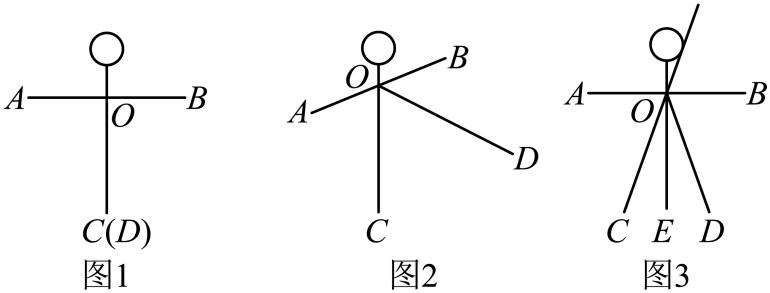
(1)如图1，A，O，B三点共线，且∠AOC=∠BOC，则∠AOC=_____°；
(2)在第三节腿部运动中，如图2，洋洋发现，A、O、B三点共线，却不在水平方向上．若∠COD=62°，∠AOD:∠BOC=6:5，求∠AOC的大小．
(3)第四节体侧运动中，如图3，乐乐发现，在运动前A、O、B三点在同一水平线上，两腿左右等距张开，∠COD=30°，OE平分∠COD，且∠AOE=90°，OA、OB绕点O顺时针旋转，OA旋转速度为每秒50°，OB旋转速度为每秒25°，当OB旋转到与OD重合时运动停止．
①运动停止时，∠AOD=______°；（用小于平角的度数表示）
②在运动过程中，是否存在常数m，使得∠AOC+m∠BOE为定值？若存在，求出常数m及该定值；若不存在，请说明理由．
【考点24 与三角板有关的角度计算】
【例24】如图1，点O为直线AB上一点，过点O作射线OC，使∠AOC:∠BOC=2:1，将直角三角板的直角顶点放在点O处，一边ON在射线OA上，另一边OM在直线AB的下方．

(1)在图1中，∠AOC=______，∠BOC=______．
(2)将图1中的三角板按图2的位置放置，使得OM在射线OA上，则∠CON=______；
(3)将上述直角三角板按图3的位置放置，使得OM在∠BOC的内部，求∠BON−∠COM的度数．
【变式24-1】（24-25六年级下·山东威海·期末）将一副三角板如图1摆放，使AO，OC在同一条直线上，∠AOB=45°，∠COD=60°，OM平分∠BOC，ON平分∠BOD．

(1)求∠MON的度数；
(2)将三角板COD绕点O逆时针旋转α0°<α<75°，其它条件不变，得到图2，请直接写出∠MON的度数______．
【变式24-2】（24-25六年级下·山东东营·期末）以直线AB上一点O为端点作射线OC，使∠BOC=40°，将一个直角三角板的直角顶点放在O处，即∠DOE=90°．
(1)如图1，若直角三角板DOE的一边OE放在射线OA上，则∠COD=___________；
(2)如图2，将直角三角板DOE绕点O顺时针转动到某个位置，
①若OE恰好平分∠AOC，则∠COD=___________；
②若OD在∠BOC内部，请通过计算写出∠BOD与∠COE有怎样的数量关系．
【变式24-3】如图，点O为直线AB上一点，过点O作射线OC，使∠BOC的度数比∠AOC度数的2倍还多6°，将一直角三角板DFE的直角顶点F放在点O处，
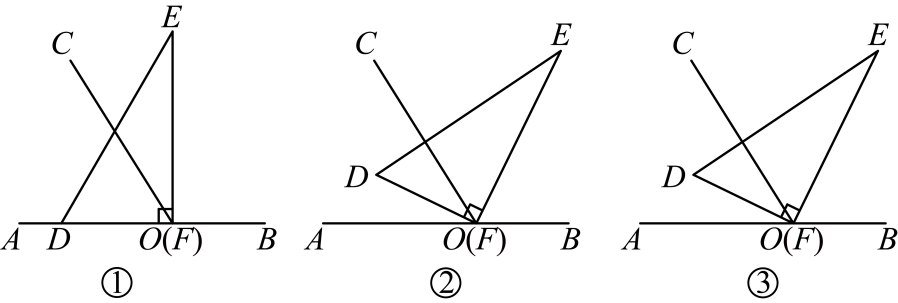
(1)如图①，将直角三角板DFE的一边FD在射线OA上，求∠COE的度数；
(2)如图②，将直角三角板DFE绕点O顺时针转动到某位置，若OC恰好平分∠AOE，求∠COD的度数；
(3)如图③，将直角三角板DFE绕点O任意转动，如果FD始终在∠AOC的内部，试猜想∠AOD和∠COE有怎样的数量关系，并说明理由．